XIAOWEI Application Note
V1.2
2023/07/07
Revision History
| Version | Date | Description |
| V1.0.0.0 | 2021/10/21 | Stable Release |
| V1.1 | 2023/05/30 | Change version number to 2 digits |
| V1.2 | 2023/07/07 | Modify Structure |
Contents
Table List
Figure List
Glossary
| Terms | Definitions |
| BLE | Bluetooth Low Energy |
| GAP | Generic Access Profile |
| GATT | Generic Attribute Profile |
1 Introduction
Tencent Xiaowei is an intelligent voice assistant solution.
It can helps users solve life-related problems through intelligent interaction and instant question-and-answer. Devices connected to Tencent Xiaowei can through natural language interaction to use music, video, weather, smart home and other skills.
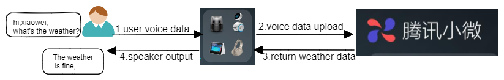
Figure 1-1 Xiaowei Interaction Flow
This application note will be introduced according to the following several parts:
- How to enable xiaowei feature please refer to chapter 2 Enable XIAOWEI Feature.
- Xiaowei process flow please refer to chapter 3 Xiaowei Process Flow.
2 Enable XIAOWEI Feature
This chapter will be introduced according to the following several parts:
- Enable XIAOWEI in MCU config tool please refer to chapter 2.1 Enable XIAOWEI in MCU Config Tool.
- Add XIAOWEI files into RWS project please refer to chapter 2.2 Add XIAOWEI Files into RWS Project.
- Set XIAOWEI environment please refer to chapter 2.3 Set XIAOWEI Environment in Keil Project.
- Add XIAOWEI lib into SDK please refer to chapter 2.4 Add Xiaowei Lib into SDK.
2.1 Enable XIAOWEI in MCU Config Tool
XIAOWEI feature should be enabled by MCU Config tool. The steps are as follows:
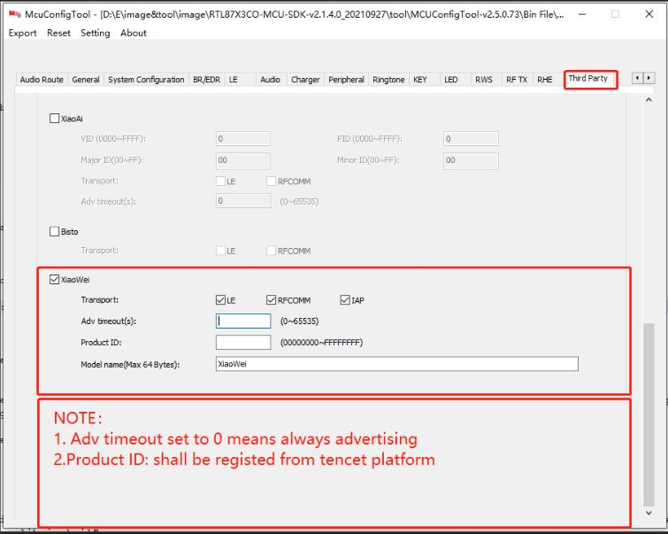
Figure 2-1 Mcu Config Tool Enable Xiaowei
2.2 Add XIAOWEI Files into RWS Project
Copy three folders of 'bin', 'src', and 'inc' provided in '3rd_service_xiaowei' to 'sdk/'.
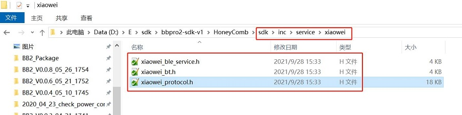
Figure 2-2 Xiaowei Lib Add Include Files
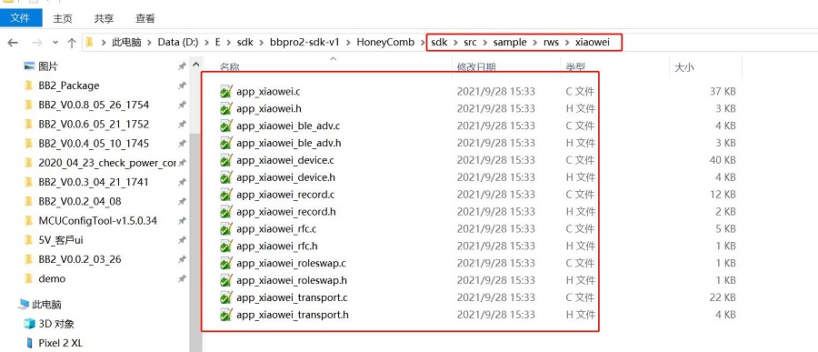
Figure 2-3 Xiaowei App Add Files
2.3 Set XIAOWEI Environment in Keil Project
In app_flags.h F_APP_XIAOWEI_FEATURE_SUPPORT set to 1
#define F_APP_XIAOWEI_FEATURE_SUPPORT 1
Enable build xiaowei_lib in keil project: find xiaowei_lib in keil project –> right click –> Options for File 'xiaowei_lib' –> Tick in front of include in Target Build
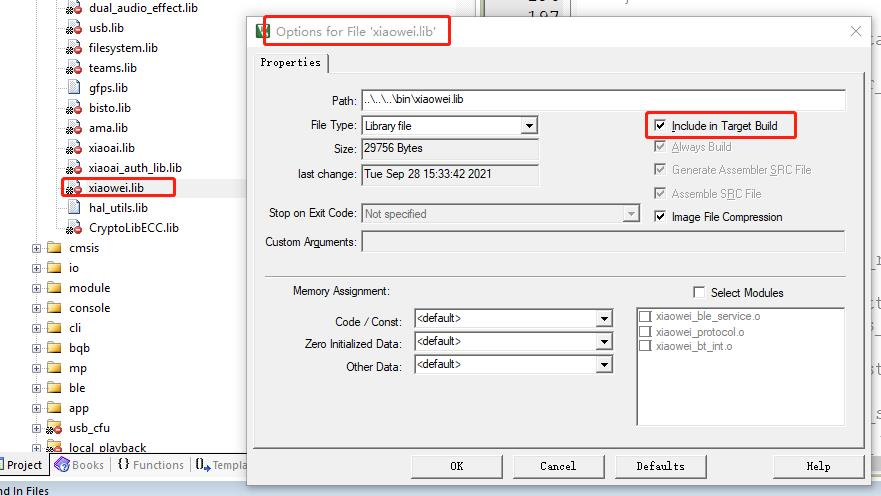
Figure 2-4 Build Xiaowei Lib in Keil
Enable build xiaowei in keil project: find xiaowei in keil project –> right click –> Options for Group 'xiaowei' –> Tick in front of include in Target Build
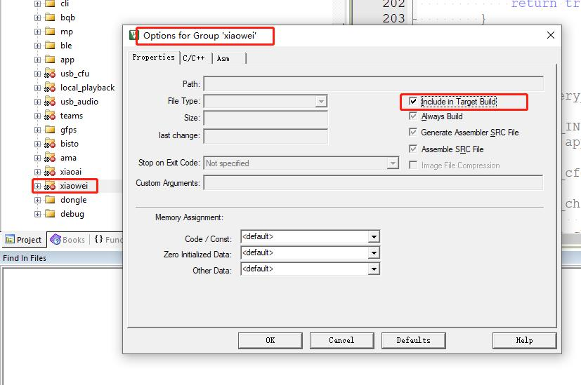
Figure 2-5 Build Xiaowei App in Keil
2.4 Add Xiaowei Lib into SDK
rtl87x3e:
Add xiaowei.lib into the following path
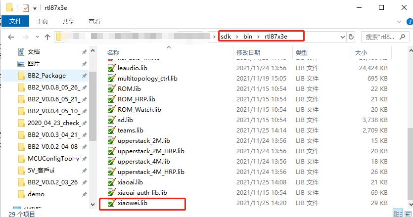
Figure 2-6 Add Xiaowei Lib into RTL87x3e
rtl87x3d:
Add xiaowei.lib into the following path
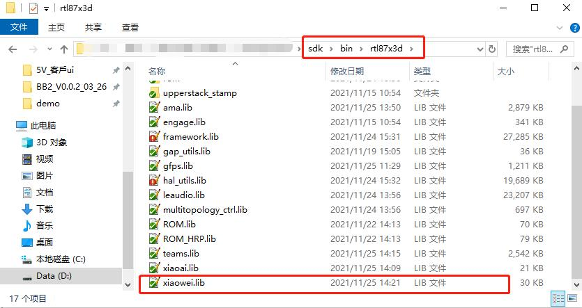
Figure 2-7 Add Xiaowei Lib into RTL87x3d
rtl87x3g:
Add xiaowei.lib into the following path
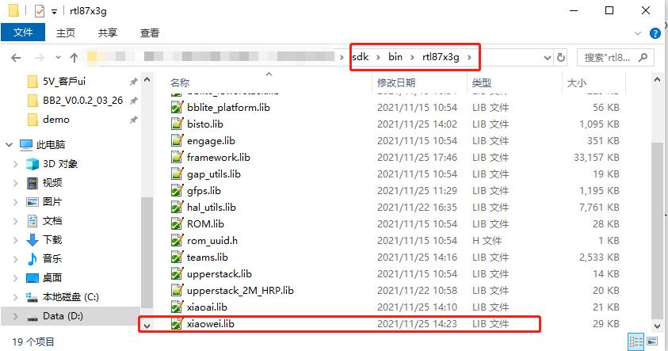
Figure 2-8 Add Xiaowei Lib into RTL87x3g
3 Xiaowei Process Flow
This chapter will be introduced according to the following several parts:
- How to test with tencent xiaowei APP please refer to chapter 3.1 Test With Tencent Xiaowei APP.
- How to connected with android phone please refer to chapter 3.2 Connected With Android Phone.
- How to record with android phone please refer to chapter 3.3 Record With Android Phone.
- How to connected with ios phone please refer to chapter 3.4 Connected With ios Phone.
- How to record with ios phone please refer to chapter 3.5 Record With ios Phone.
3.1 Test With Tencent Xiaowei APP
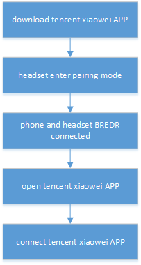
Figure 3-1 Test With Tencent Xiaowei APP
3.2 Connected With Android Phone
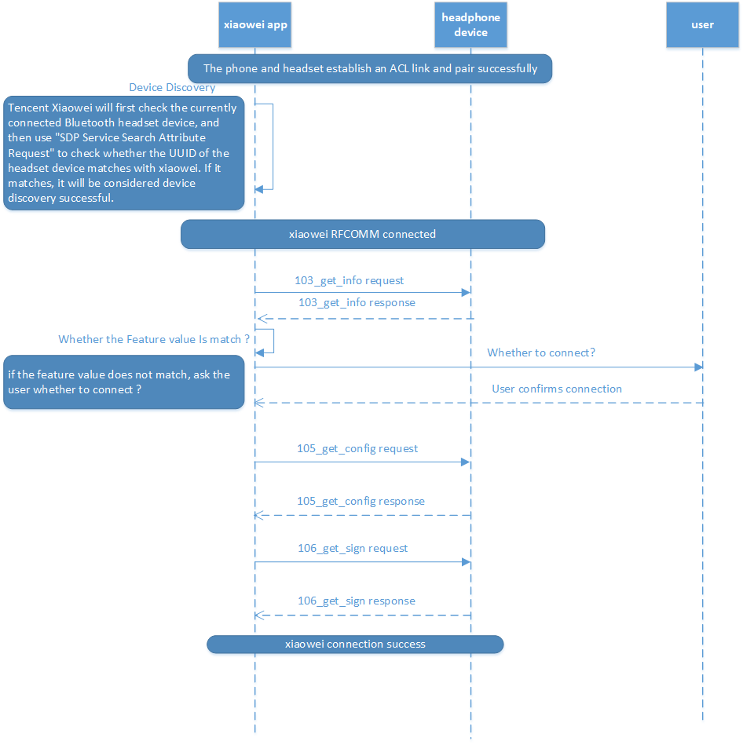
Figure 3-2 Connect With Android Phone
3.3 Record With Android Phone
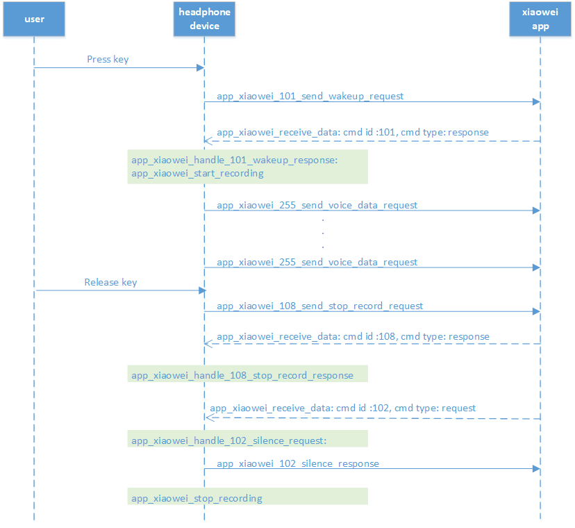
Figure 3-3 Record Flow With Android
3.4 Connected With ios Phone
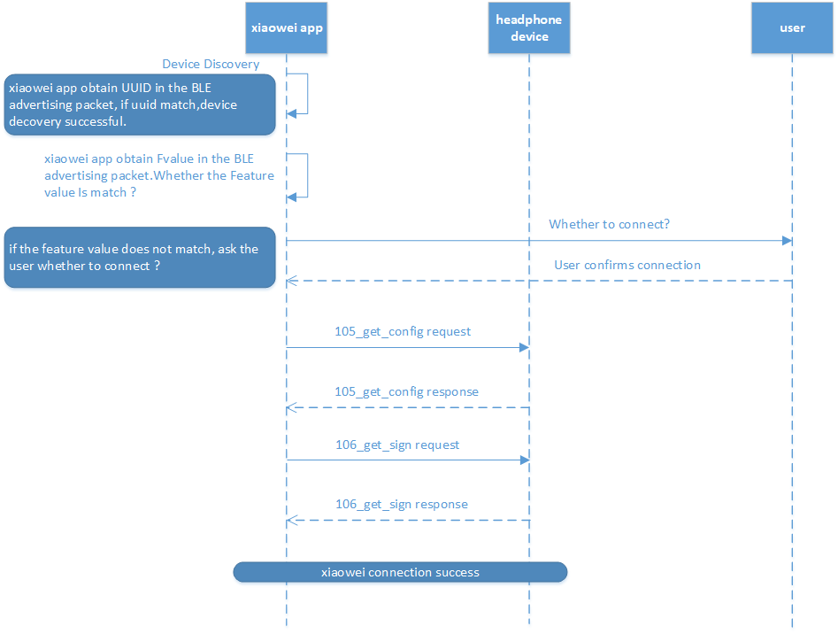
Figure 3-4 Connect With ios Phone
3.5 Record With ios Phone
Figure 3-5 Record Flow With ios